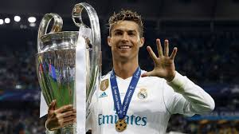

THE REAL GOAT AND REAL RONALDO
2009–2015: World record transfer and consecutive Ballon d'Or wins
Ronaldo adapted tremendously to Spanish football, scoring 33 goals in just 35 games in his debut season.
In 2009, Ronaldo transferred to Real Madrid for a then world record £80 million.[90] At least 80,000 fans attended his
presentation at the Santiago Bernabéu, surpassing the 25-year record of 75,000 fans who had welcomed Diego Maradona at
Napoli.[91] Ronaldo said, "This is the completion of my boyhood dream, to be a Real Madrid player."[92]
Ronaldo made his La Liga debut against Deportivo La Coruña on 29 August, scoring a penalty in a 3–2 home win.[93] He
scored in each of his first four league games, the first Madrid player to do so.[94] His first Champions League goals
for the club followed with two free kicks in the first group match against Zürich.[95] His strong start to the season
was interrupted when he suffered an ankle injury in October while on international duty, which kept him sidelined for
seven weeks.[96][97] Despite scoring 33 goals in all competitions and contributing to Real Madrid's 96 points in La
Liga, his first season with Madrid ended trophyless.[98]
Ronaldo scored 46 league goals during the La Liga championship success in his third season in Spain.
Following Raúl's departure, Ronaldo was given No. 7 for the 2010–11 season and scored 53 goals, helping Madrid win the
Copa del Rey, scoring the winning goal against rivals Barcelona in the El Clásico, his first trophy with Madrid.[99] He
also became the first player in La Liga to score 40 goals.[100] In addition to the Pichichi Trophy, Ronaldo won the
European Golden Shoe for a second time, becoming the first player to win the award in different leagues.[101]
The following season saw Ronaldo score 60 goals across all competitions,[102] leading Madrid to their first league title
in four years with a record 100 points and his runner-up finish to Lionel Messi in the 2011 FIFA Ballon d'Or.[103] He
scored his 100th league goal for Madrid in a 5–1 win over Real Sociedad on 24 March 2012, breaking the previous club
record held by Ferenc Puskás.[104] In the 2012–13 season, he scored his first hat-trick in the Champions League in a 4–1
win over Ajax.[105] Four days later, he became the first player to score in six successive Clásicos when he hit a brace
in a 2–2 draw at Camp Nou.[106] His performances again saw Ronaldo voted second in the running for the 2012 FIFA Ballon
d'Or, behind four-time winner Messi.[107]
Following the 2012–13 winter break, Ronaldo captained Madrid for the first time in an official match, scoring twice to
lift 10-man Madrid to a 4–3 win over Sociedad on 6 January.[108] He subsequently became the first non-Spanish player in
60 years to captain Madrid in El Clasico on 30 January, a match which also marked his 500th club appearance.[1
THE REAL GOAT AND BETTER THAN
Hamza Choudhury
THE REAL GOAT OF BD
Hamza Dewan Choudhury (Bengali: হামজা দেওয়ান চৌধুরী; born 1 October 1997) is a professional footballer who plays as a
defensive midfielder or right-back for EFL Championship club Sheffield United, on loan from Premier League club
Leicester City. Born in England, he plays for the Bangladesh national team.
Choudhury is a product of Leicester City Academy, he joined the club at the age of seven. After gaining professional
experience with two loan spells at Burton Albion, he has made over 100 senior appearances for Leicester since 2017. With
Leicester, Choudhury won the FA Cup in 2021.
Choudhury has represented England at under-21 level and, after receiving his Bangladeshi passport in late 2024, made the
decision to play for the Bangladesh national team.
THE REAL GOAT AND BETTER THAN ALL BD PLAYER